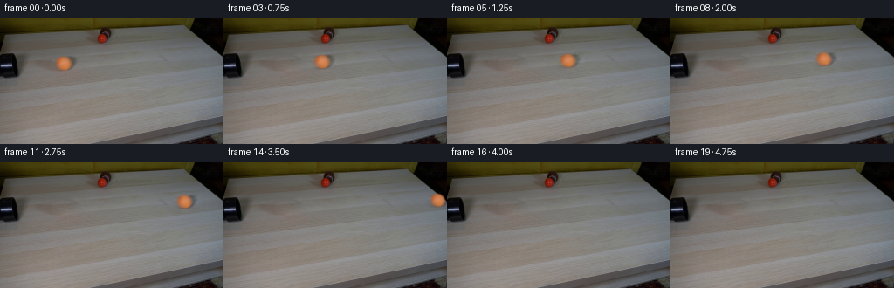
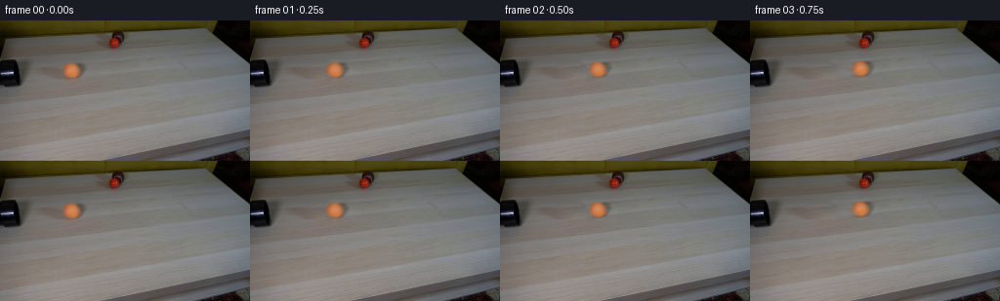

← 本轮 smoke 总览traex/GPT-6-Astra · 0010
vision-agent · 256×144 · 4.0 FPS · 20 帧 · 状态 running · 输出 tokens None
原始任务Static locked-off single-shot with fixed frame throughout filmed with constant framerate in real-time. The scene shows a realistic scientific demonstration. The scene only contains the described setup and actions. A light-colored wooden coffee table with a few small objects on it, including a brown tennis ball and a smaller red ball. The orange tennis ball rolls straight out of the black pipe over the entire table towards the right side.
当前保存结果
此结果可播放，但该运行尚未通过最终提交审核。页面展示不代表评测通过。
已保存候选与代码修改
这里按时间展示外部捕获的候选，每份均可单独播放。保存新版本不等于完成视觉检查；下方工具证据记录实际看过的图。
候选 01 · 2026-11-08T22:29:06.200730+00:00 · 点开播放与检查图
inspection.png

transition_check.png

代码变化
--- 上一保存版本
+++ 本次保存版本
@@ -0,0 +1,75 @@
+"""Recreate the fixed tabletop shot with an orange ball rolling to the right."""
+from pathlib import Path
+import cv2
+import numpy as np
+from PIL import Image
+from artifact_io import save
+
+ROOT = Path(__file__).resolve().parent
+
+
+def background_plate(image):
+ """Continue the existing board grain through the ball's original footprint."""
+ h, w = image.shape[:2]
+ hole = np.zeros((h, w), np.uint8)
+ cv2.ellipse(hole, (75, 51), (19, 13), 0, 0, 360, 255, -1)
+ # This is an adjacent patch from the very same plank, aligned with its grain.
+ wood = cv2.warpAffine(image, np.float32([[1, 0, -43], [0, 1, 6]]),
+ (w, h), flags=cv2.INTER_LINEAR,
+ borderMode=cv2.BORDER_REFLECT)
+ x, y, bw, bh = cv2.boundingRect(hole)
+ return cv2.seamlessClone(wood, image, hole, (x + bw // 2, y + bh // 2),
+ cv2.NORMAL_CLONE)
+
+
+def main():
+ original = np.asarray(Image.open(ROOT / 'first_frame.png').convert('RGB'))
+ h, w = original.shape[:2]
+ plate = background_plate(original).astype(np.float32)
+ source = original.astype(np.float32)
+ yy, xx = np.mgrid[:h, :w].astype(np.float32)
+ cx, cy = 73.15, 51.35
+ # Recover a soft matte from the ball's orange chroma; preserve the camera's
+ # slightly soft silhouette instead of drawing a new, overly sharp sphere.
+ chroma = (source[:, :, 0] - source[:, :, 1]) - (plate[:, :, 0] - plate[:, :, 1])
+ r = np.sqrt(((xx - cx) / 8.45) ** 2 + ((yy - cy) / 7.9) ** 2)
+ alpha = np.clip(chroma / 75., 0., 1.)
+ alpha *= np.clip((1.65-r)/.25, 0., 1.)
+ alpha = np.maximum(alpha, np.clip((.95-r)/.18, 0., 1.))
+ # The residual includes both the photographed sphere and its soft cast and
+ # contact shadows. Premultiplication makes the sphere opaque on other wood.
+ residual = source - plate
+ foreground = residual + plate * alpha[..., None]
+ frames = [original.copy()]
+ for i in range(1, 20):
+ t = i / 4.
+ # Modest rolling friction: continuous forward travel, no bounce or slide.
+ distance = 54.0 * t - 1.35 * t * t
+ nx = cx + distance
+ ny = cy - .048 * distance
+ scale = 1.0 - .00030 * distance
+ mat = np.float32([[scale, 0, nx-scale*cx],
+ [0, scale, ny-scale*cy]])
+ matte = cv2.warpAffine(alpha, mat, (w, h), flags=cv2.INTER_LINEAR,
+ borderMode=cv2.BORDER_CONSTANT)
+ sprite = cv2.warpAffine(foreground, mat, (w, h), flags=cv2.INTER_LINEAR,
+ borderMode=cv2.BORDER_CONSTANT)
+ frame = plate * (1 - matte[..., None]) + sprite
+ # Very low-contrast felt variations rotate on the sphere while the
+ # illumination and the shadow remain fixed relative to the light.
+ u = (xx-nx)/(8.45*scale)
+ v = (yy-ny)/(7.9*scale)
+ z = np.sqrt(np.clip(1-u*u-v*v, 0, 1))
+ angle = distance / 8.45
+ ur = np.cos(angle)*u - np.sin(angle)*z
+ zr = np.sin(angle)*u + np.cos(angle)*z
+ texture = (np.sin(8.0*ur+3.0*v+1.1)*np.sin(6.0*zr-4.5*v)
+ - np.sin(8.0*u+3.0*v+1.1)*np.sin(6.0*z-4.5*v))
+ frame += .65*texture[..., None]*matte[..., None]*z[..., None]
+ frames.append(np.clip(np.rint(frame), 0, 255).astype(np.uint8))
+ frames = np.stack(frames)
+ assert np.array_equal(frames[0], original)
+ save(frames, ROOT)
+
+if __name__ == '__main__':
+ main()
可观测工具行为
命令 1 · 2026-11-08T22:20:43.540099+00:00/bin/bash -lc "ls -la && cat prompt.txt && printf '\\n---RULES---\\n' && cat GENERATION_RULES.md"
exit 0 命令 2 · 2026-11-08T22:21:53.220733+00:00/bin/bash -lc "cat artifact_io.py && python - <<'PY'
from PIL import Image
im=Image.open('first_frame.png');print(im.size); im.resize((1024,576)).save('.tmp/enlarged.png')
PY"exit 0 命令 3 · 2026-11-08T22:23:15.766988+00:00/bin/bash -lc "python - <<'PY'
import PIL.Image as I
im=I.open('first_frame.png'); im.crop((45,32,104,71)).resize((708,468)).save('.tmp/ball.png')
import importlib.util
for x in ['cv2','scipy','numpy']:print(x, bool(importlib.util.find_spec(x)))
PY"exit 0 命令 4 · 2026-11-08T22:24:06.191152+00:00/bin/bash -lc "cat > .tmp/test_background.py <<'PY'
import cv2
import numpy as np
from PIL import Image
im=np.array(Image.open('first_frame.png'))
h,w=im.shape[:2]; yy,xx=np.mgrid[:h,:w]
mask=np.zeros((h,w),np.uint8)
cv2.ellipse(mask,(76,52),(19,14),-15,0,360,255,-1)
# local wood from a nearby portion of the same plank
source=cv2.warpAffine(im,np.float32([[1,0,-37],[0,1,5]]),(w,h),flags=cv2.INTER_LINEAR,borderMode=cv2.BORDER_REFLECT)
base=cv2.seamlessClone(source,im,mask,(76,52),cv2.NORMAL_CLONE)
Image.fromarray(base).save('.tmp/base.png')
Image.fromarray(base).resize((1024,576)).save('.tmp/base_large.png')
PY
python .tmp/test_background.py"exit 0 命令 5 · 2026-11-08T22:25:38.922689+00:00/bin/bash -lc "python - <<'PY'
import cv2,numpy as np
from PIL import Image
im=np.array(Image.open('first_frame.png'));h,w=im.shape[:2]
m=np.zeros((h,w),np.uint8);cv2.ellipse(m,(76,52),(22,17),0,0,360,255,-1)
a=cv2.inpaint(im,m,5,cv2.INPAINT_TELEA);Image.fromarray(a).resize((1024,576)).save('.tmp/inpaint.png')
# blend clone smooth background color adjusting patch to its matching boundary
Y,X=np.mgrid[:h,:w];s=cv2.warpAffine(im,np.float32([[1,0,-43],[0,1,6]]),(w,h),flags=cv2.INTER_LINEAR,borderMode=cv2.BORDER_REFLECT).astype(float)
r=((X-76)/21)**2+((Y-52)/15)**2
ring=(r>1)&(r<1.9)
# fit smooth color transform between target source, using ring
mat=np.stack([np.ones((h,w)),(X-76)/21,(Y-52)/15],axis=-1)
b=np.linalg.lstsq(mat[ring], (im.astype(float)-s)[ring],rcond=None)[0]
s+=mat@b
alpha=np.clip((1.1-np.sqrt(r))/.28,0,1);alpha=alpha*alpha*(3-2*alpha)
a=im*(1-alpha[:,:,None])+s*alpha[:,:,None]
Image.fromarray(a.clip(0,255).astype('uint8')).save('.tmp/base2.png');Image.fromarray(a.clip(0,255).astype('uint8')).resize((1024,576)).save('.tmp/base2large.png')
PY"exit 0 命令 6 · 2026-11-08T22:26:21.873588+00:00/bin/bash -lc "python - <<'PY'
from PIL import Image
import numpy as np
im=np.array(Image.open('first_frame.png')).astype(float)
for y in range(40,64,2):
print(y, ' '.join('%3d'%v for v in (im[y,60:96,0]-im[y,60:96,1])))
PY"exit 0 命令 7 · 2026-11-08T22:27:54.887015+00:00/bin/bash -lc "python - <<'PY'
from PIL import Image
import numpy as np
im=np.array(Image.open('first_frame.png')).astype(float); bg=np.array(Image.open('.tmp/base2.png')).astype(float)
for y in range(40,65,2):print(y,' '.join('%3d'%v for v in (im-bg)[y,58:99:2].mean(-1)))
PY"exit 0 命令 8 · 2026-11-08T22:28:15.859871+00:00/bin/bash -lc "python - <<'PY'
import cv2,numpy as np
from PIL import Image
im=np.array(Image.open('first_frame.png'));h,w=im.shape[:2]
mask=np.zeros((h,w),np.uint8);cv2.ellipse(mask,(75,51),(19,13),0,0,360,255,-1)
s=cv2.warpAffine(im,np.float32([[1,0,-43],[0,1,6]]),(w,h),flags=cv2.INTER_LINEAR,borderMode=cv2.BORDER_REFLECT)
x,y,ww,hh=cv2.boundingRect(mask);print(x,y,ww,hh)
a=cv2.seamlessClone(s,im,mask,(x+ww//2,y+hh//2),cv2.NORMAL_CLONE)
Image.fromarray(a).save('.tmp/base3.png');Image.fromarray(a).resize((1024,576)).save('.tmp/base3large.png')
PY"exit 0 命令 9 · 2026-11-08T22:29:04.301261+00:00/bin/bash -lc "cat > generate.py <<'PY'
\"\"\"Recreate the fixed tabletop shot with an orange ball rolling to the right.\"\"\"
from pathlib import Path
import cv2
import numpy as np
from PIL import Image
from artifact_io import save
ROOT = Path(__file__).resolve().parent
def background_plate(image):
\"\"\"Continue the existing board grain through the ball's original footprint.\"\"\"
h, w = image.shape[:2]
hole = np.zeros((h, w), np.uint8)
cv2.ellipse(hole, (75, 51), (19, 13), 0, 0, 360, 255, -1)
# This is an adjacent patch from the very same plank, aligned with its grain.
wood = cv2.warpAffine(image, np.float32([[1, 0, -43], [0, 1, 6]]),
(w, h), flags=cv2.INTER_LINEAR,
borderMode=cv2.BORDER_REFLECT)
x, y, bw, bh = cv2.boundingRect(hole)
return cv2.seamlessClone(wood, image, hole, (x + bw // 2, y + bh // 2),
cv2.NORMAL_CLONE)
def main():
original = np.asarray(Image.open(ROOT / 'first_frame.png').convert('RGB'))
h, w = original.shape[:2]
plate = background_plate(original).astype(np.float32)
source = original.astype(np.float32)
yy, xx = np.mgrid[:h, :w].astype(np.float32)
cx, cy = 73.15, 51.35
# Recover a soft matte from the ball's orange chroma; preserve the camera's
# slightly soft silhouette instead of drawing a new, overly sharp sphere.
chroma = (source[:, :, 0] - source[:, :, 1]) - (plate[:, :, 0] - plate[:, :, 1])
r = np.sqrt(((xx - cx) / 8.45) ** 2 + ((yy - cy) / 7.9) ** 2)
alpha = np.clip(chroma / 75., 0., 1.)
alpha *= np.clip((1.65-r)/.25, 0., 1.)
alpha = np.maximum(alpha, np.clip((.95-r)/.18, 0., 1.))
# The residual includes both the photographed sphere and its soft cast and
# contact shadows. Premultiplication makes the sphere opaque on other wood.
residual = source - plate
foreground = residual + plate * alpha[..., None]
frames = [original.copy()]
for i in range(1, 20):
t = i / 4.
# Modest rolling friction: continuous forward travel, no bounce or slide.
distance = 54.0 * t - 1.35 * t * t
nx = cx + distance
ny = cy - .048 * distance
scale = 1.0 - .00030 * distance
mat = np.float32([[scale, 0, nx-scale*cx],
[0, scale, ny-scale*cy]])
matte = cv2.warpAffine(alpha, mat, (w, h), flags=cv2.INTER_LINEAR,
borderMode=cv2.BORDER_CONSTANT)
sprite = cv2.warpAffine(foreground, mat, (w, h), flags=cv2.INTER_LINEAR,
borderMode=cv2.BORDER_CONSTANT)
frame = plate * (1 - matte[..., None]) + sprite
# Very low-contrast felt variations rotate on the sphere while the
# illumination and the shadow remain fixed relative to the light.
u = (xx-nx)/(8.45*scale)
v = (yy-ny)/(7.9*scale)
z = np.sqrt(np.clip(1-u*u-v*v, 0, 1))
angle = distance / 8.45
ur = np.cos(angle)*u - np.sin(angle)*z
zr = np.sin(angle)*u + np.cos(angle)*z
texture = (np.sin(8.0*ur+3.0*v+1.1)*np.sin(6.0*zr-4.5*v)
- np.sin(8.0*u+3.0*v+1.1)*np.sin(6.0*z-4.5*v))
frame += .65*texture[..., None]*matte[..., None]*z[..., None]
frames.append(np.clip(np.rint(frame), 0, 255).astype(np.uint8))
frames = np.stack(frames)
assert np.array_equal(frames[0], original)
save(frames, ROOT)
if __name__ == '__main__':
main()
PY
python generate.py"exit 0 命令 10 · 2026-11-08T22:29:25.200124+00:00/bin/bash -lc "ffmpeg -hide_banner -loglevel error -y -framerate 4 -i frames/%02d.png -c:v libx264 -crf 16 -pix_fmt yuv420p -movflags +faststart video.mp4 && python - <<'PY'
import numpy as np
from PIL import Image
p=np.load('pixels.npz')['pixels']; im=np.array(Image.open('first_frame.png')).astype(np.uint32)
assert p.shape==(144,256,20)
assert np.array_equal(p[:,:,0],(im[:,:,0]<<16)|(im[:,:,1]<<8)|im[:,:,2])
print('Verified 20 RGB frames at 256x144, with pixel-identical first frame.')
PY"exit 127 命令 11 · 2026-11-08T22:29:33.027303+00:00/bin/bash -lc "python - <<'PY'
import numpy as np
from PIL import Image
p=np.load('pixels.npz')['pixels']; im=np.array(Image.open('first_frame.png')).astype(np.uint32)
assert p.shape==(144,256,20)
assert np.array_equal(p[:,:,0],(im[:,:,0]<<16)|(im[:,:,1]<<8)|im[:,:,2])
print('Verified 20 RGB frames at 256x144, with pixel-identical first frame.')
PY"exit 0 保存候选 1 份；完成命令 11 次；可验证图片返回 0 张。原始 API 响应与完整日志保留在本地。